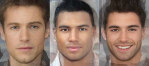
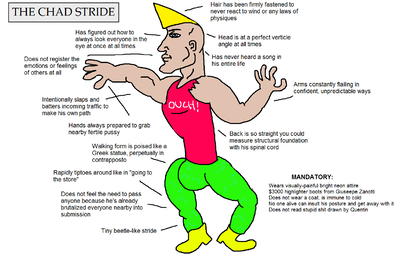
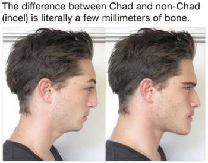

Chad


A Chad is a man who can elicit near-universal positive female sexual attention at will. He is usually good looking, muscular, tall, and wealthy, or has otherwise high status and tends be a fast life history strategist. In countries where team sports are popular and associated with high social status, he is often a jock. He also tends to have intimidating masculine features such as a square jaw, hunter eyes, pronounced cheekbones, a broad chin, and a thick neck.
Highly attractive less masculine men are often considered prettyboys as opposed to chads. A Chad is an 8 or 9 on the decile scale followed by Chadlite. A Chad is only mogged by Gigachad.
Chads are the primary male beneficiaries of the sexual revolution.
Etymology[edit | edit source]
1990s[edit | edit source]
In Chicago, Illinois, during the 1990s, "Chad" became a derogatory slang term for successful white men in their 20s and early 30s.[citation needed]
The term was popularized by a satirical website called the Lincoln Park Trixie Society. Chad was a handsome young man from a Big 10 school (or similar midwestern university with good sports teams and mediocre academics) who lived in "upwardly mobile" areas of Chicago, worked in law or finance, and still wore his old fraternity t-shirts.[citation needed]
Chad dated a Trixie (later Stacy), who was a young, blonde, cheerleader-type woman who drove a black Jetta, drank Starbucks lattes, worked in marketing or PR, and filled her small apartment with the latest from Pottery Barn. At the time, neither Chad nor Trixie was overly sexualized or caricatured: Chad was athletic and could play a sport or two, but he was not necessarily a bulky body-builder nor captain of the varsity team. Trixie was an all-American "girl next door" rather than a bimbo.
2000s[edit | edit source]
In The Outer Limits episode "Skin Deep" from 4 February 2000 the unattractive Sid Camden uses a hologram projector to copy the identity of his handsomer coworker Chad Warner guy whose identity gets copied by an unattractive co-worker.[1] Both roles were played by Antonio Sabato Junior, feeding in to the whole "just shower sweaty" narrative, as Antonion simply used messy hair and stubble to try and look ugly.
On June 1st, 2006, Urban Dictionary user Mav Himself submitted an entry for "Chad," defining him as a guy who "goes to the bar to pick up chicks." On August 9th, 2013, Urban Dictionary user Dr. James Russell submitted an entry for "Chad Thundercock," which defined the character as a "stereotypical high school/college alpha male" who is "successful with women" (shown on the right).
On August 10th, 2013, the Chad Thundercock Tumblr blog was launched, which coincided with him being defined on UrbanDictionary.
2010s[edit | edit source]
On January 9th, 2015, BodyBuilding Forums user oogahboogah submitted a post titled "Going on Tinder as Chad Thundercock is beyond depressing". The post featured screenshots of Tinder chat sessions using a fake profile. The user was disappointed that the archetypal jock image could get away with being very sexually forward and rude without getting blocked, unlike what typically occurred when the user talked to women using his own profile.
On March 23rd, Redditor invicticide submitted a post questioning how Chad became "the default name for alpha douchebros" to the /r/ForeverAlone subreddit, to which Redditor ian_n cited the /r9k/ board on 4chan as the origin of the meme. On April 18th, YouTuber 4chan Sound Effects uploaded a video titled "Chad Thundercock Shows How to Ree," in which a voice-over introduces himself as Chad Thundercock and proceeds to make a loud "Ree" noise.
On May 21st, Redditor JayEster submitted a post to the /r/justneckbeardthings subreddit questioning what the female counterpart to Chad Thundercock was, to which Redditor Thepaladinofchaos replied: "Stacy Thundercunt is a varsity cheerleader with a 4.0 gpa." On July 15th, Redditor whatthefuckisreddit submitted a screenshot of a gruesome 4chan post titled "Chad and Stacy fantasy" to the /r/4chan subreddit, that gained over 4,100 votes (92% upvoted) and 190 comments in two months.
Life[edit | edit source]
Chad doesn't cockblock other men as he doesn't need to. In fact, women flock to Chad, even if he is shy,[2] which is an uncomfortable truth for PUAs. Chad opens his dating app only to be flooded by matches and messages.
Chadfishing experiments have proven that Chad can message nearly anything to a woman and get a date or even get them to immediately agree to have sex with him. Chad can have sex with a wide variety of women and has exclusive access to Stacy. Beckies want Chad but sometimes feel societal pressure not to.
Upon getting access to Chad, Beckies become chadstruck, and if rejected by Chad then mistreats incels and normies.[3]
Looks[edit | edit source]
Common characteristics for a Chad born from looks often include: above manlet height, large frame, broad shoulders, 0-1 on the Norwood scale, hunter eyes with little to no upper eyelid exposure, positively or neutrally tilted eyes, prominent high cheekbones, thick eyebrows, a large skull, compact midface, killer long chin, defined squarish jawline, long vertical ramus, gonial angle of approx. 120 degrees, forward growth of the mandible and the maxilla, a short straight nose, an ideal philtrum to chin ratio (with the philtrum being shorter), clean exotic skin, healthy bite with white teeth, and lastly, low body fat (below 15%).
High-status Chad vs fast-life Chad[edit | edit source]
The Chad meme actually refers to two different, though overlapping, groups of men.
One meaning of Chad is a high status, competent, and good looking male, who could have all the chicks if he wanted to. But the high-status Chad is not necessarily promiscuous. He may even be an incel e.g. when being deprived of females, diseased, or when exhibiting strong adaptations for arranged marriage and love shyness.
The other meaning of Chad is a highly promiscuous male, i.e. a male with fast life genes. In this case, it may sometimes even be used as a derogatory term. Incel communities hyper-focusing on looks and lookism theorists mistakenly assume that such men are always extremely good looking.
Evolution[edit | edit source]

Women's desire for high-status men and Chads can perhaps be explained by the bodyguard hypothesis, which states women seek protection from undesirable males by choosing the most dominant man available to them. Dominance is not only about strength but also wealth, looks, IQ, intimidating appearance, personality, social skills, and influence. Historically, Chads monopolized multiple wives, leaving some men empty-handed.
Before the industrial revolution and women entering the workforce en masse in the 20th century, women heavily depended on men's resources.[4] This ancestral dependence on male provision suggests women face a trade-off between choosing a more dominant, more protective and better looking, but less committing Chad, or a less dominant, but more committing betabuxx. These provider males are generally more willing to commit to long-term relationships due to a relative lack of potential mates.
Women naturally evaluate men's status and ability to provide resources by deferring sex and downplaying their sexual interest. It appears only exceptionally good looking and dominant Chads can skip this stage no matter how poorly they behave (though some would argue that many women are more attracted to men with bad personalities), as was proven in Chadfishing experiments.
This phenomenon may be explained by the sexy son hypothesis, which states runaway selected ornament such as good looks and highly masculine behavior can trump all other characteristics due to the prospect of having one's offspring inherit their good looks and rapey personality, leading to greater reproductive success (which is all that matters from the point of view of the selfish genes).
However, there is also evidence suggesting that beauty is also weakly correlated with the overall quality of the organism. Slight deviations from the average face may serve as an indicator of developmental instability. This developmental instability may be either due to the presence of pollutants and toxins disturbing development or as a result of a high mutational load as suggested by researchers who argue that physical attractiveness is generally indicative of overall genetic quality.
Certain aspects of Chad's physical appearance, such as a highly masculine facial bone structure and overall physical strength, may also have evolved in an evolutionary arms race between men competing for women, resources, and survival, rather than being directly attractive to women.[5][6][7]
Cross-culturally, there is little evidence that women prefer masculine faces exclusively, with men's facial masculinity seemingly mostly unrelated to their overall facial attractiveness,[8] though this appears to vary by ecological and mating context. Humans are substantially self-domesticated and therefore neotenous (meaning retaining youthful features) such that some facial neoteny is also attractive in men (see pretty boy). In contrast, Chad's muscular body is nearly universally attractive to women.[9] However, women's attraction to more muscular males likely falls within a goldilocks zone, with extreme levels of muscularity (such as what can be achieved via steroid abuse) possibly being detrimental to men's sexual attractiveness, however, as it is completely abnormal.
Sexual antagonism or intralocus sexual conflict[edit | edit source]
It has been noted that high fitness fathers (Chads) whilst they do produce high fitness sons (Sexy Sons Hypothesis) tend to also produce low fitness daughters and vise versa for Stacy's. This is because of certain traits that are expressed in both sexes but the optimal expression for that trait is different for both sexes. The most notable example of this in humans are the hips. In females the hips are selected to be wider for child birth and in males they are selected to narrower for movement and hunting. The constant tug and pull (antagonism) of selective pressures to have narrow hips in men but wider hips in women ensures that the trait doesn't go to far in either direction and unless sex-limited/sex-specific expression for a trait is coded for by a new gene this sexual antagonism will continue.[10] The most popular example of this can be found in Asian/Oriental women. Asians in general exhibit higher levels of neoteny than other races; as a result Asian women are the most sought over demographic on dating sites, because of this there are an overabundance of Asian Stacys. Typically these Asian Stacys catch white fever and will mate and have children with White Men; because neoteny is not completely sex-specific in its expression we find that High Fitness Asian Stacys produce Lower Fitness Eurasian sons (the most notable example of this being Elliot Rodger) but will also produce High Fitness Eurasian Daughters. Thus it seems that any marriage between a European and an Asian will have the most reproductive success if they produce only daughters. The same can be said for extremely tall, thin hipped and broad shouldered men. These men will go on to have High Fitness sons that are also tall, thin hipped and broad shouldered but will produce low fitness daughters that are lower in fitness that are tall, thin hipped and broad shouldered.
Most of what we know in this area comes from experiments with fruit flies; these experiments suggests that many traits are still under strong opposing selection pressures and that this is beneficial because it maintains genetic variation and neutralize the indirect (Good Genes) benefits of sexual selection.[11][12][13][14] However we do have more observations of Sexual Antagonism in Red Deer, whereby Chad Red Deer produce low fitness daughters.[15]
Ethnic variations[edit | edit source]
- Black - Tyrone
- Latino - Chadriguez/Rico/Carlos
- Asian - Chang Thunderwang
- Indian - Chadpreet
- Pakistani - Basheer
- Native American - Chief
- French - Gaston
- Italian - Tony/Tommy[16]
- Portuguese - Afonso
- Brazilian - Ricardão/Chadinei
- English - Jason
- Kenyan - Wafula Omutombi
- Russian - Ivan Erokhin (Иван Ерохин)
- Arabic - Chaddam, Abdul
- German - Justus
- Spanish - Machote, musculitos, empotrador, Don Juan
- Persian - Khosrow (خسرو), Kourosh (کوروش), Jamshid (جمشید)
- Greek - Adonis
- Hungarian - Csanád
- Turkish - Kıvanç, Berkecan
- Serbian - Čedomir
- Armenian - Armen
- Dog - Buster
- Dutch - Tsjeerd Donderlul
- Czech - Jan (or Honza, first one is preferred)
- Nigerian - Adebayo
- Jewish - Chiam
Nicknames[edit | edit source]
Chad has many nicknames in both the femcel and mancel incelosphere including:
- Pantydropper
- Pussywetter
- Instagrool (instantly makes women grool)
- Vajayjuicer
- Estrogenizer (makes the female sex hormone estrogen go into overdrive)
- Clitlifter
- Mingetinger
- Eyefuckee (gets eyefucked by all women)
- Flapdrooler
- Estrous-catalyst (makes women act like they're in heat)
- Estrum-inducer (makes women act like they're in heat)
- Sherector
- Pussymoisturizer
- Pantywetter
- Pantydripper (guy who makes women's panties drip)
- Slitspitter (makes women squirt upon seeing him)
- Gashfoamer
- Blueclitter (gives women blue clit syndrome)
- Beansprouter
Quotes[edit | edit source]
- “The death of a Chad is a tragedy, the death of an incel is just a statistic.” (Comment on the latest video of Incel TV.)[17]
References[edit | edit source]
- ↑ The Outer Limits S06E03 Skin Deep Dailymotion (Big Time Rush Full Episodes), 31 July 2017.
- ↑ https://youtube.com/watch?v=-Z49ixqSFAE (section of the girl interviewed)
- ↑ https://www.bustle.com/articles/83353-why-rejection-from-an-attractive-man-makes-women-mean-to-less-attractive-men-because-hell-hath
- ↑ https://incels.wiki/w/Scientific_Blackpill_(Supplemental)#Women_were_historically_predominantly_involved_in_cooking_and_they_never_dominated_men
- ↑ https://www.sciencedirect.com/science/article/abs/pii/S1090513810000279
- ↑ https://www.sciencedirect.com/science/article/abs/pii/S1090513817304105
- ↑ https://www.sciencedirect.com/science/article/abs/pii/S1090513813000615
- ↑ https://journals.plos.org/plosone/article?id=10.1371%2Fjournal.pone.0225549
- ↑ https://incels.wiki/w/Scientific_Blackpill#Rated_strength_is_the_main_predictor_of_men.27s_bodily_attractiveness._No_women_prefer_weak_men
- ↑ https://www.researchgate.net/publication/227510622_Intersexual_ontogenic_conflict?_sg=xJj1oz_d9_SyuuhUv-SFaxlPwbuaS699leCMkfn9DR3qKPdFLYlsf2dLNqYV0B7kC2cXGJd13ibKC7E
- ↑ https://www.researchgate.net/publication/5373689_Reproductive_Behaviour_Evolves_Rapidly_When_Intralocus_Sexual_Conflict_Is_Removed?_sg=OoB67X1UKGlV3wByqt1aW7biksqNb3M8MZMZc61QpwzLt1JMt3uQqsD6v2YxdjML4qPXCp9zQyIUOGY
- ↑ https://www.researchgate.net/publication/12158381_Negative_correlation_for_adult_fitness_between_sexes_reveals_ontogenetic_conflict_in_Drosophila?_sg=FvBnytCjO2ykLnzgv2EUr6ImQLt-Uz1xh21iKSerYaby3UlsREK78hth44a6lNICzkbCz3EoT0nkuIs
- ↑ https://www.researchgate.net/publication/42372675_The_Sexually_Antagonistic_Genes_of_Drosophila_melanogaster?_sg=zE11MxwHeLLaKYJwF9SQm-OLGQI715wywduPlYcePdPDUj_t1F1PZcYS3GowqgXXmVr9b8f63HpssUE
- ↑ https://www.researchgate.net/publication/6593814_An_Evolutionary_Cost_of_Separate_Genders_Revealed_by_Male-Limited_Evolution
- ↑ https://www.researchgate.net/publication/6239287_Sexually_antagonistic_genetic_variation_for_fitness_in_Red_Deer
- ↑ Tony a Italian sub-variety of the Chad species. Usually identified by their average height, packed muscle, eyebrow slit, woman attracting jewelry, thick accents, and associated with Italian Mafia. This class of Chad was largely inspired and based around the God-Father, a documentary film of Tony-chadom legacy. This masterful story is a pinnacle of Italian Chad culture and history which is largely attributing to modern day Tony’s.
- ↑ Saidit.net post
See also[edit | edit source]
This page, created on or after 2018, initially and currently uses 2016/2017 text from Redpilltalk Wiki previously known as SluthateWiki. Borrowed material has been altered. Text has been deemed Fair Use for this non-profit wiki. Unchanged text is credited to the authors of the 2016/2017 RedpillTalk wiki page here.